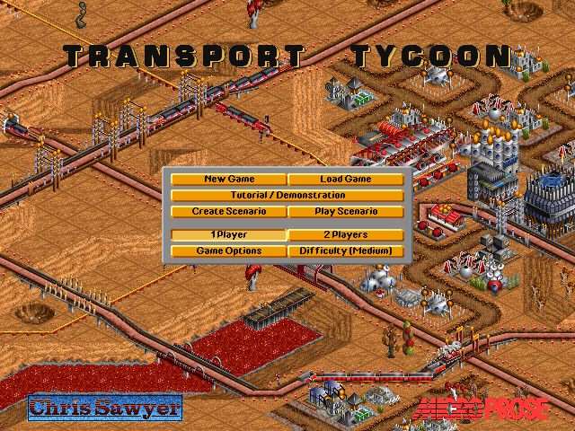
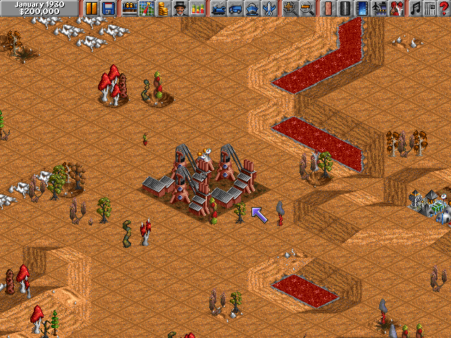
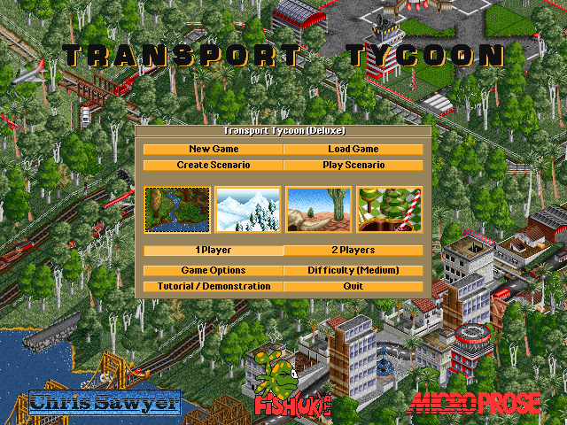
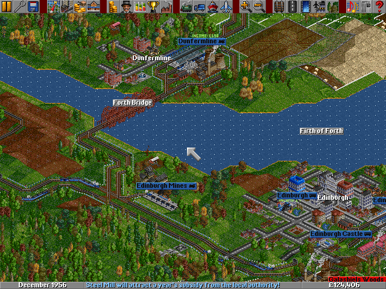

名稱：運輸大亨 (Transport Tycoon，英文版)
簡介：Chris Sawyer 1994年出品的運輸業建造經營模擬遊戲，由MicroProse代理發行。1995
年再推出「異星殖民篇（World Editor／Scenario Editor）」，之後更推出結合二者
且再增加新功能的「豪華版（Deluxe）」 [待補]。




備註：本版為2.01.119豪華版DOS版
保護：光碟版歐版主程式為光碟，可拷貝光碟的GRF檔案到安裝目錄，即可免光碟。
豪華版DOS版為光碟，將光碟根目錄檔案拷貝到安裝目錄，即可免光碟。
其餘均無保護（豪華版Windows版必須完全安裝）。
限制：豪華版Windows版為3.02.011版，只能在Win9x系統執行，XP以上系統會有相容性問題。
備註：磁片版安裝時若出現drive不實際存在的訊息，可進行下列修正：
INSTALL.EXE
75 11 B0 00 50
EB -- -- -- --
備註：光碟版均為1.07.023版，分為歐版與美版。歐版執行ENGLISH.EXE為只安裝主程式，到
HARDDISK執行ENGLISH.BAT為安裝主程式+資料片。美版為主程式+資料片，內容同歐版，
光碟多了手冊。
檔案：trans-disk.rar = 1.07.023磁片版（含資料片）
trans-cd.rar = 1.07.023光碟版（含資料片）